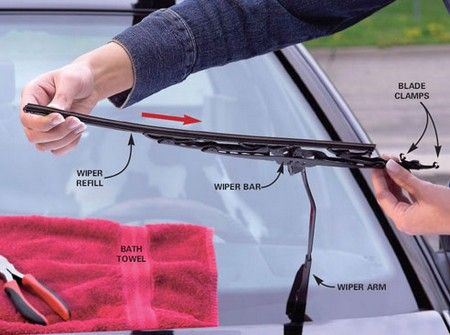

Back To Home Page
Step 3: Attach the New Ones
Take the new wiper, and insert the arm through the appropriate hole, so that it pushes the actual wiper up. To determine which hole it goes through, adjust the hinge to be perpendicular to the wiper and line it up so that the arm's hook will go over the hinge. Once the arm is inside the hole, just line the hook over the hinge and push them together. You'll hear and feel a click when it's snapped in. Lower the arm, rinse and repeat and you're finished! Hopefully you'll notice a big difference in their performance. I know I did.
